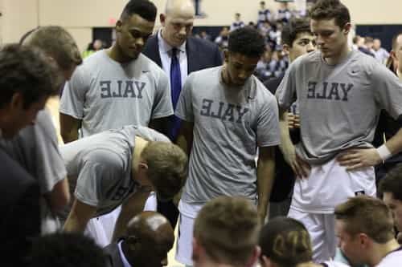
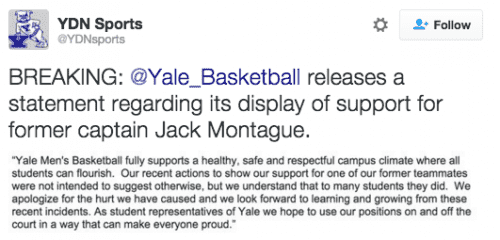

Rod Berne is a student, writer, and thought criminal. His columns run every Saturday. Follow him on Twitter.


Recently, the media has been reporting that Yale basketball player Jack Montague has been accused of rape by various student organizations on campus. They have also reported that these students have accused the university administration and campus newspaper of “protecting a rapist.”
However, the story is far from clear. There is no arrest record or court hearing involving Montague on file in Connecticut. No victim, anonymous or otherwise appears to exist, Montague has made no statement, and the university has not commented on why he left. On March 9, it was reported by the New York Times, “Jack Montague, 22, was in connection with a sexual misconduct accusation, according to two people with direct knowledge of the case who spoke on condition of anonymity.” In short, a student abruptly withdrew and immediately students on campus brand him a rapist based on an anonymous source followed by hundreds of students spreading rumors.
Speculation, rumor, and innuendo. That is all it takes to ruin a student’s reputation. I asked a friend at the campus newspaper if he’d heard what has happened and he said there is no information, statement, or victim. There is such a lack of acceptable villains to hate that college students are now inventing them to stir up outrage. Voltaire once said, “If God didn’t exist it would have been necessary to invent him.” For modern leftism, it seems if rapists don’t exist it is necessary to invent them.
When I first learned of Montague’s withdrawal I asked a classmate if she had heard why he left. She responded, “Apparently he assaulted someone, and the university expelled him.” I asked who he assaulted, and she replied she did not know. Curious, I asked a few other people, and the answers roughly matched what my classmate had said: he raped someone, he was expelled, no one knows who he raped. No one bothered to look into it any further than that. Someone said the guy is a rapist, and that is all the proof these students need.
The average student on campus is complete unaware of whether or not the student was accused of any wrongdoing and simply assume that because lefty student organizations are making announcements, they must be right.
Posted on Facebook: Dean urges students to behave like adults– students respond like children
Throughout campus there are fliers with the words “Stop Supporting a Rapist” printed on them. Various groups including the Yale Women’s Center and “Unite Against Sexual Assault Yale” are holding events to “take a stand against rape culture and show your support for survivors on Yale’s campus.” In this particular instance, there appears to be no “survivor” to speak of. Yet if you asked them they would say this particular case doesn’t matter, it is about fighting the system that allows rape to happen. In other words, they are using a case built on nothing to push their agenda.
One effeminate student named Jonathan Simonds launched an online form titled “I support Yale women,” and many students have added their signatures.
“I have been really frustrated with what’s going on,” Simonds said. “I don’t have the capacity to speak to certain incidents, but I can tackle campus culture as a whole. Sexual assault is a hard and touchy subject, and it happens more than we think because a lot of times the person doesn’t have the courage to come forward.”
They are well aware that they control the narrative and that the average student has done no research into the matter and blindly follows what the organizations tell them. To even question it is to lose status among their peers.

During the recent basketball game against Harvard in which Montague was absent, his teammates wore jerseys with his nickname, “Gucci,” printed on them. The “Yale” logo was printed backwards with inverted letters. One player commented on this decision by stating, “We just wanted to make it as clear as possible that Jack is one of our brothers,” Sears said. “He’s family to us and we miss him.”
For soft and emotionally stunted millennials, this was considered an act of aggression. Many students wrote publications essentially saying, “Basketball players are cool and have influence, why can’t they believe the same things I believe and push my agenda?” They’ve also been posting more fliers smearing the basketball team.
One poster read “This poster will probably be torn down by the men’s basketball team” and in smaller font beneath, “Stop silencing women.” Members of the team and other friends have taken down most of the posters found around campus.
The Women’s Center released a Facebook statement:
We condemn the insensitivity of the protest even as we withhold judgement (sic) on individual team members. We also recognize that there are power dynamics at play in all student groups, athletics included, that leave some members with less agency than others.
The word “agency” is thrown around a lot on this campus, and I’ve found that when women say that they “lack agency” what it really means is “I am not responsible for my actions so don’t hold me accountable for anything.”
Here’s another quote from their post:
The team’s actions seem to us a dismissal of the very real threat of sexual violence. That some of the members of the team thought the potential expulsion was a matter to protest shows that toxic attitudes about sexual violence persist on our campus.
Dismissal is another word used often at many colleges. What it really means is “I’m a child that can’t handle disagreement so I will use stupid concepts to sound smart.”
Students are craving some form of validation that their accusations are true. But when the local newspaper requested a comment, the administration responded “Yale policy is to not release identifiable information from a student’s educational record to the public, unless a student requests that the information be disclosed.” Policies are getting in the way of witch-hunts. We can bet they won’t be around much longer.
The basketball team caved in the face of the SJW witch-hunt, and released this statement on March 9th:

The Guardian reported that one student athlete has said:
For legal reasons, Jack isn’t allowed yet to defend his name and say what the actual situation is. A lot of people have been speculating what’s been happening and unfortunately this is what’s causing the drama. Which is far from the case from what has happened. So in time he’ll be able to say what’s going and everyone will be able to take a step back and realize that all this is a little bit overboard.
If the situation involves a girl in any way, people will not take a step back. They will take two steps forward and the witch-hunt will intensify.
The father of the student athlete spoke briefly with the local city newspaper.
“We have strict orders from our lawyers,” He said. “Soon enough, I’d love to tell the other side of the story. It’s ridiculous, why he’s expelled. It’s probably going to set some sort of precedent. We’re trying to do things the gentleman’s way, so we’re keeping things close-knit. But you guys will get a story.”
Some sort of precedent. Students have already been expelled for being accused of rape, so it’s unlikely that this is the reason for Montague’s departure. Most fathers would not call their son being accused of rape “ridiculous,” especially given the current climate. Though we can only speculate on the situation, these comments point to a very mild reason for the expulsion. Whether or not it was sexual in nature, this story has been used to push the leftist agenda of branding all men rapists.
Read More: What The Social Justice Coup Attempt At Yale University Looked Like